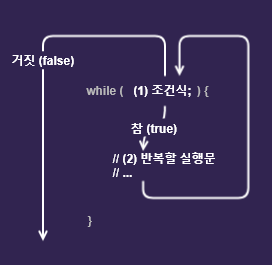
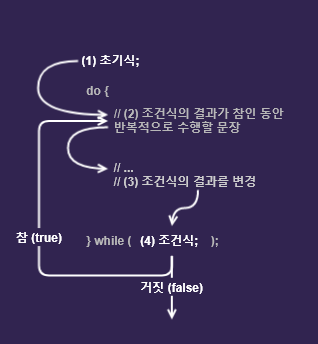

반복문 (iteration statements)
반복문은 어떤 작업이 반복적으로 수행되도록 할 때 사용되며
프로그램 내에서 똑같은 명령을 일정 횟수만큼 반복하여 수행하도록 제어하는 명령문입니다. 프로그램이 처리하는 대부분의 코드는 반복적인 형태가 많으므로, 가장 많이 사용되는 제어문 중 하나입니다.
자바에서 사용되는 대표적인 반복문의 형태는 다음과 같습니다.
- for 문
- Enhanced for 문
- while 문
- do-while 문
while 문
while 문은 for문에 비해 구조가 간단합니다. while문은
조건식이 참(true)인 동안 즉, 조건식이 거짓이 될 때까지 블럭{}내의 문장을 실행합니다.
Syntax
while (조건식) {
// 조건식의 결과가 참(true)인 동안 반복적으로 실행하고자 하는 문장들
}- 조건식 : 조건식이 참(true)이면 블럭{}안의 문장들을 실행, 거짓(false)이면 while문을 벗어납니다.
- 블럭{} : 블럭{}의 문장을 수행하고 다시 조건식으로 돌아갑니다.
while문 실행흐름
for문을 while문으로 바꿔본 예제입니다. 이 예제를 통해서 for문과 while문의 차이점을 알아두세요.
for문
// 초기식; 조건식; 증감식
for (int i = 1; i <= 10; i++) {
System.out.println(i);
}while문
int i = 1; // 초기식
while (i <= 10) { // 조건식
System.out.println(i);
i++; // 증감식
}for문
// 무한 for문
for (;;) { ... }while문
// 무한 while문
while (true) { ... }주의 : while문의 조건식은 생략불가입니다. while문의 조건식이 항상 참(true)이 되도록 하려면 조건식에 true를 널어야 합니다.
do-while 문
do-while 문은 while문의 변형으로
기본적인 구조는 while문과 동일합니다. 단지 조건식과 블럭의 순서를 바꾼 것입니다. 그래서 while문과 반대로
블럭{}을 먼저 수행하고 조건식을 판단하여 반복문을 실행할 것인지 반복문을 벗어날 것인지를 판단합니다. 조건식을 판단하지 않고 while문의 블럭{}을 먼저 수행하기 때문에
최소 한번은 무조건 실행되는 구조입니다.
Syntax
do {
// 조건식의 연산결과가 참(true)일 때 수행될 문장들;
} while (조건식); // 끝에 세미콜론(;)을 잊지 않도록 주의.do-while문 실행흐름
break 문
switch문에서 사용한 break문은 반복문에서도 사용할 수 있습니다.
break 문은 루프 내에서 사용하여 해당 반복문을 완전히 종료시킨 뒤, 반복문 바로 다음에 위치한 명령문을 실행합니다. 즉
루프 내에서 조건식의 판단 결과와 상관없이 반복문을 완전히 빠져나가고 싶을 때 사용합니다. 주로 if문과 함께 사용되어 특정 조건을 만족하면 반복문을 벗어나도록 할 때 사용됩니다.
continue 문
continue 문은
반복문 내에서만 사용될 수 있으며, 반복이 진행되는 도중에 continue문을 만나면
해당 반복문의 나머지 부분을 건너뛰고 반복문의 끝으로 이동하여 다음 반복 조건식의 판단으로 넘어가게 해줍니다.
보통 반복문 내에서 특정 조건에 대한 예외 처리를 하고자 할 때 자주 사용됩니다.
이름 붙은 반복문 (break with label)
일반적인 break문은 단 하나의 반복문만을 빠져나가게 해줍니다. 따라서 여러 반복문이 중첩된 상황에서 한 번에 모든 반복문을 빠져나가거나, 특정 반복문까지만 빠져나가고 싶을 때는 다른 방법을 사용해야 합니다. 이때 사용할 수 있는 방법이 바로 반복문에 이름(label)을 설정하는 것입니다. 가장 바깥쪽 반복문이나 빠져나가고 싶은 특정 반복문에 이름을 설정한 후, break 키워드 다음에 해당 이름을 명시하면 됩니다. 그러면 해당 break 키워드는 현재 반복문이 아닌 해당 이름의 반복문 바로 다음으로 프로그램의 실행을 옮겨줍니다. 단, 이때 이름(label)은 가리키고자 하는 반복문의 키워드 바로 앞에 위치해야 합니다. 이름과 반복문의 키워드 사이에 명령문이 존재하면, 자바 컴파일러는 오류를 발생시킬 것입니다.